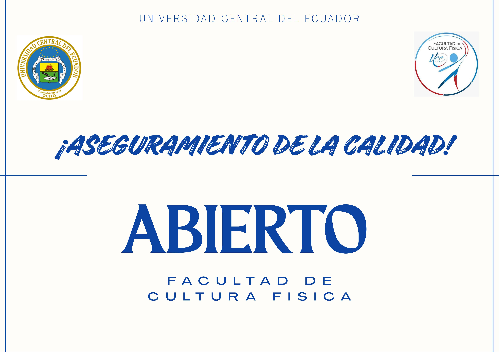
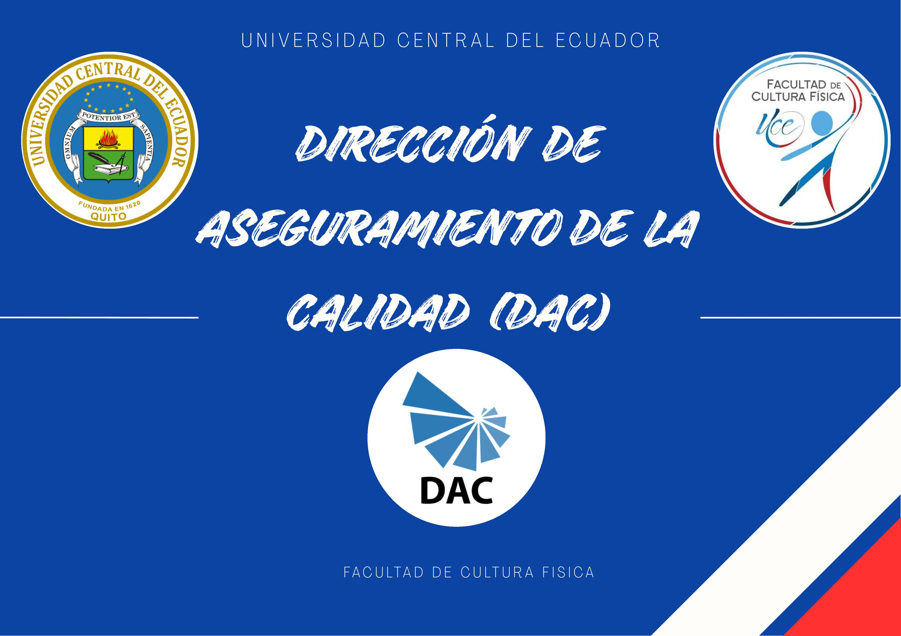
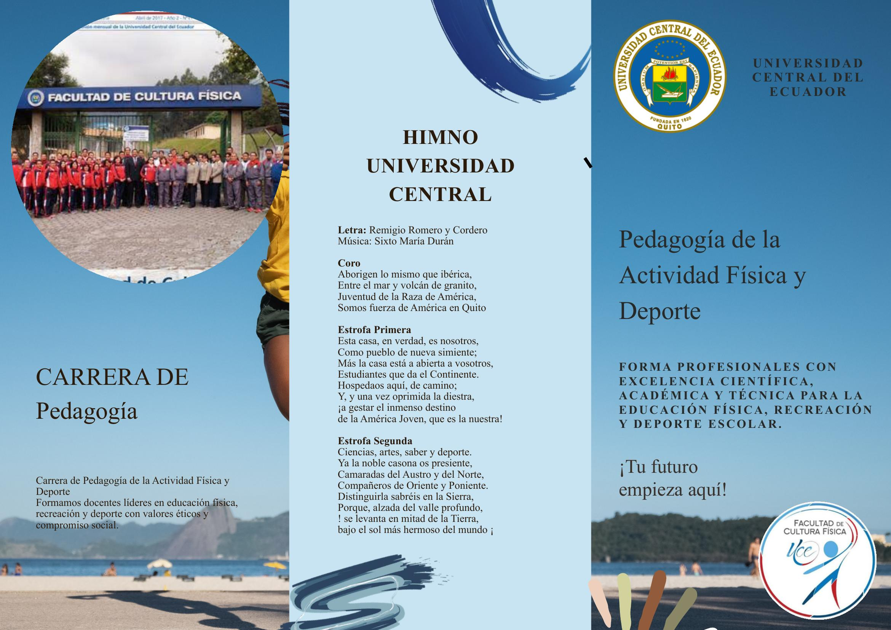
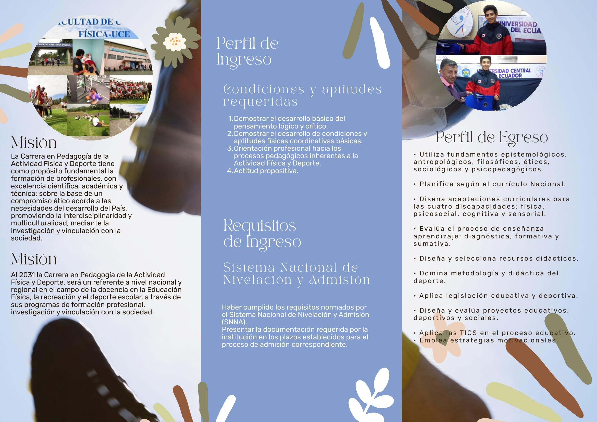
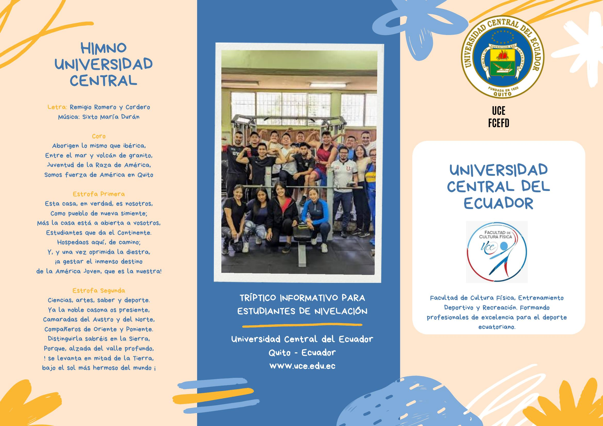
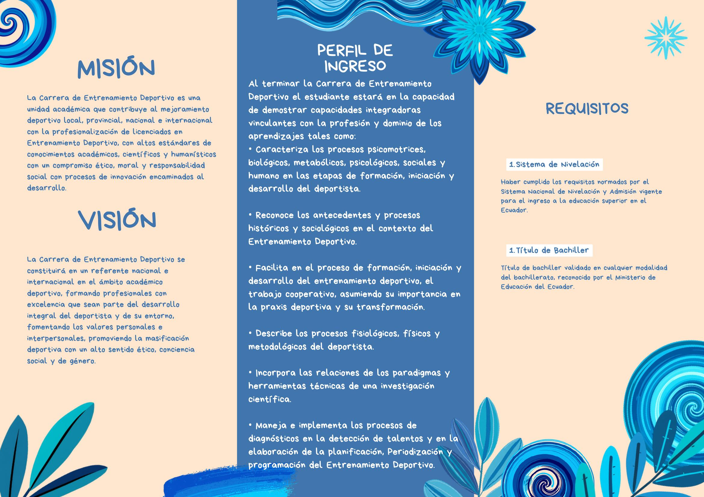
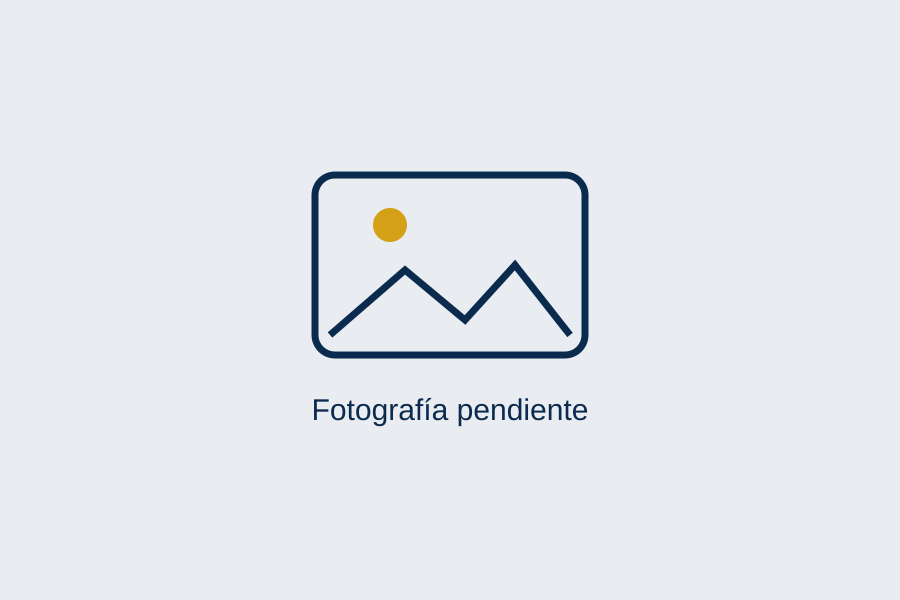

Filtra por categoría para encontrar el contenido que buscas. Haz clic en cualquier imagen para verla en grande.

Cartel
Cartel institucional¡Aseguramiento de la Calidad!

Cartel
Cartel institucionalDirección de Aseguramiento de la Calidad (DAC)

Tríptico
CarreraPedagogía de la Actividad Física y Deporte

Tríptico
CarreraMisión, Visión y Perfiles - Pedagogía

Tríptico
CarreraEntrenamiento Deportivo

Tríptico
CarreraMisión, Visión y Requisitos - Entrenamiento

EventoJornada de Autoevaluación 2025
CharlaEstándares de calidad educativa
CapacitaciónFormación en evaluación docente
FotografíaInstalaciones de la Facultad
InfografíaIndicadores de calidad 2025
AcreditaciónReconocimiento CACES
DocumentaciónArchivo de evidencias
TrípticoPlanes de mejora continua
CartelTaller de Evaluación de Programas
EventoForo de Calidad Educativa
CharlaDiálogo con autoridades académicas
CapacitaciónGestión documental y procesos
FotografíaActividades en el campus
InfografíaCiclo de mejora continua
AcreditaciónCertificación institucional
DocumentaciónNormativa y evidencias